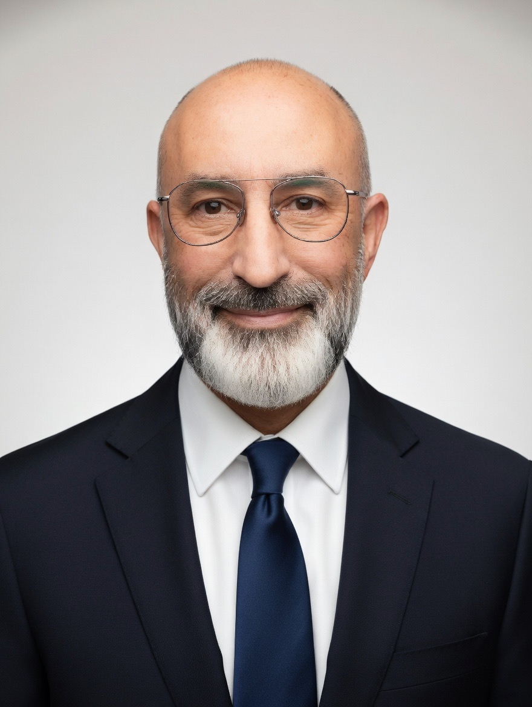

Chirurgie privée — Paroi abdominale et digestive
Private Surgery — Abdominal Wall & Digestive
Chirurgien général spécialisé dans la prise en charge des hernies de la paroi abdominale et la chirurgie digestive, avec plus de 20 ans d'expérience à Montréal.
General surgeon specializing in abdominal wall hernia management and digestive surgery, with over 20 years of experience in Montréal.

Depuis plus de 20 ans, je me consacre à la chirurgie de la paroi abdominale et à la chirurgie digestive. Chaque patient présente une situation unique : c'est pourquoi mon approche repose sur une évaluation approfondie et une discussion ouverte des options thérapeutiques disponibles.
For over 20 years, I have been dedicated to abdominal wall surgery and digestive surgery. Every patient presents a unique situation — which is why my approach relies on thorough evaluation and an open discussion of available treatment options.
Selon le type de hernie, l'anatomie et les objectifs du patient, la réparation peut faire appel à une prothèse ou, chez des patients sélectionnés, à une technique sans prothèse comme l'opération de Shouldice, généralement reconnue comme la réparation sans prothèse.
Depending on the hernia type, anatomy, and patient goals, repair may involve mesh (laparoscopic or open technique) or, in selected patients, a non-mesh technique such as the Shouldice operation — recognized as the best primary tissue repair.
Prise en charge complète de la paroi abdominale et de la chirurgie digestive.
Comprehensive management of abdominal wall and digestive surgery.
Prise en charge complète des hernies de l'aine, primaires ou récidivantes.
Complete management of groin hernias, primary or recurrent, using open and laparoscopic techniques.
Hernies du nombril, de la ligne médiane et des sites d'ancienne chirurgie abdominale — approche adaptée selon la taille, le contenu et le profil du patient.
Navel, midline, and prior surgical site hernias — approach tailored to size, content, and patient profile.
Prise en charge des hernies peu fréquentes de la paroi abdominale, incluant les hernies de Spiegel, de Petit, de Grynfeltt-Lesshaft et autres localisations atypiques.
Management of uncommon abdominal wall hernias, including Spigelian, Petit, Grynfeltt-Lesshaft, and other atypical hernias.
Généralement reconnue comme la meilleure réparation tissulaire sans prothèse, pratiquée dans des cas rigoureusement sélectionnés pour des résultats durables.
Generally recognized as the best tissue repair without mesh, performed in carefully selected cases for lasting results.
Cholécystectomie laparoscopique pour lithiases, pancréatite biliaire, polypes de la vésicule et autres pathologies.
Laparoscopic cholecystectomy for gallstones and cholecystitis — elective and emergency management.
Gastroscopie et coloscopie diagnostiques et thérapeutiques pour les pathologies du tube digestif.
Diagnostic and therapeutic gastroscopy and colonoscopy for gastrointestinal conditions.
Les réponses aux interrogations les plus courantes de nos patients.
Answers to our patients' most common questions.
Une hernie est un défaut de la paroi abdominale à travers lequel un organe — le plus souvent l'intestin grêle ou l'épiploon (tissu graisseux intra-abdominal) — fait saillie sous la peau. Elle se manifeste typiquement par un renflement visible ou palpable, souvent accompagné d'une sensation de pesanteur, de tiraillement ou de douleur, notamment lors d'efforts physiques, de toux ou de manœuvres de Valsalva.
A hernia is a defect in the abdominal wall through which an organ — most often the small intestine or omentum (intra-abdominal fatty tissue) — protrudes beneath the skin. It typically presents as a visible or palpable bulge, often accompanied by a sensation of heaviness, pulling, or pain, particularly during physical exertion, coughing, or Valsalva maneuvers.
Les hernies se classifient selon leur localisation anatomique. Les types les plus fréquents sont : inguinale (aine — de loin la plus courante, représentant environ 75 % des hernies de la paroi abdominale), ombilicale (nombril), incisionnelle (au site d'une cicatrice chirurgicale antérieure), fémorale (sous le pli de l'aine, plus fréquente chez la femme), épigastrique (ligne médiane au-dessus du nombril) et spigelienne (bord latéral du muscle droit).
Hernias are classified by their anatomical location. The most common types include: inguinal (groin — by far the most common, accounting for approximately 75% of abdominal wall hernias), umbilical (navel), incisional (at the site of a previous surgical scar), femoral (below the groin crease, more common in women), epigastric (midline above the navel), and spigelian (lateral border of the rectus muscle).
À retenir : Les hernies ne guérissent jamais spontanément — aucun exercice, ceinture ou médicament ne peut refermer le défaut. La chirurgie demeure le seul traitement définitif, et les résultats sont excellents avec les techniques modernes de réparation.
Key point: Hernias never heal spontaneously — no exercise, belt, or medication can close the defect. Surgery remains the only definitive treatment, and outcomes are excellent with modern repair techniques.
Toute hernie identifiée — par vous-même, votre médecin ou lors d'un examen d'imagerie — mérite une évaluation chirurgicale. La consultation permet d'établir un diagnostic précis, de déterminer le type et la taille de la hernie, et de planifier la prise en charge optimale avant que des complications ne surviennent.
Any hernia identified — by yourself, your physician, or on imaging — warrants a surgical evaluation. The consultation allows for an accurate diagnosis, determination of hernia type and size, and planning of optimal management before complications arise.
Consultez en urgence si vous présentez l'un de ces signes : une bosse qui ne se réduit plus (hernie incarcérée), une douleur intense ou d'apparition soudaine, des nausées ou vomissements, un arrêt du transit intestinal, ou un changement de couleur de la peau au-dessus de la hernie. Ces symptômes peuvent indiquer un étranglement herniaire — une urgence chirurgicale.
Seek emergency care if you experience any of the following: a bulge that can no longer be pushed back (incarcerated hernia), intense or sudden-onset pain, nausea or vomiting, cessation of bowel movements, or skin color changes over the hernia. These symptoms may indicate hernia strangulation — a surgical emergency.
En l'absence de signes d'urgence, une consultation élective vous permettra de discuter des options chirurgicales et de choisir le moment le plus favorable pour l'intervention.
In the absence of emergency signs, an elective consultation will allow you to discuss surgical options and choose the most favorable timing for your procedure.
Dans la grande majorité des cas, oui. L'observation vigilante (watchful waiting) peut être envisagée dans des situations très sélectionnées : hernies inguinales asymptomatiques de petite taille chez des patients présentant un risque anesthésique ou chirurgical élevé. Toutefois, les données cliniques montrent que les hernies tendent à s'agrandir progressivement, que les symptômes apparaissent ou s'aggravent avec le temps, et que le risque d'incarcération et d'étranglement augmente.
In the vast majority of cases, yes. Watchful waiting may be considered in very select situations: small, asymptomatic inguinal hernias in patients with elevated anesthetic or surgical risk. However, clinical evidence shows that hernias tend to enlarge progressively, symptoms develop or worsen over time, and the risk of incarceration and strangulation increases.
Pour les hernies fémorales, la chirurgie est pratiquement toujours recommandée d'emblée en raison du risque élevé d'étranglement. De même, les hernies incisionnelles bénéficient généralement d'une réparation chirurgicale, car elles sont sujettes à une augmentation progressive de taille.
For femoral hernias, surgery is virtually always recommended promptly due to the elevated risk of strangulation. Similarly, incisional hernias generally benefit from surgical repair, as they are prone to progressive enlargement.
Les réparations herniaires se divisent en deux grandes catégories : les réparations tissulaires (sans prothèse) et les réparations prothétiques (avec filet). Le choix dépend du type de hernie, de sa taille, de l'anatomie du patient et de son profil clinique.
Hernia repairs fall into two broad categories: tissue repairs (without mesh) and prosthetic repairs (with mesh). The choice depends on hernia type, size, the patient's anatomy, and clinical profile.
Réparations tissulaires pour les hernies de l'aine (sans prothèse) :
Tissue repairs (without mesh):
• Shouldice : Reconstruction multicouche du plancher inguinal avec suture continue en fil non résorbable. Considérée comme la réparation sans prothèse de référence pour les hernies inguinales. Taux de récidive de 1 à 2 % dans les mains d'un chirurgien expérimenté — des résultats comparables aux réparations avec prothèse. Le Dr Bendavid pratique régulièrement cette technique.
• Shouldice: Multi-layer reconstruction of the inguinal floor using continuous non-absorbable suture. Considered the best primary tissue repair for inguinal hernias. Recurrence rate of 1 to 2% in experienced hands — results comparable to mesh repairs. Dr Bendavid performs this technique regularly.
• Bassini, McVay, Desarda : Autres techniques tissulaires historiques ou contemporaines, utilisées dans des indications spécifiques.
• Bassini, McVay, Desarda: Other historical or contemporary tissue techniques, used in specific indications.
Réparations prothétiques (avec filet) :
Prosthetic repairs (with mesh):
• Lichtenstein : Réparation ouverte avec pose d'un filet de polypropylène par voie antérieure. Technique la plus pratiquée au monde pour la hernie inguinale. Reproductible, fiable, avec un taux de récidive inférieur à 1 %.
• Lichtenstein: Open repair with anterior polypropylene mesh placement. The most widely performed technique worldwide for inguinal hernia. Reproducible, reliable, with a recurrence rate below 1%.
• Réparations par voie postérieure (Stoppa, Rives, rétromusculaire) : Le filet est placé dans l'espace prépéritonéal, derrière les muscles. Utilisées notamment pour les hernies bilatérales, récidivantes ou incisionnelles de grande taille.
• Posterior approach repairs (Stoppa, Rives, sublay): The mesh is placed in the preperitoneal space, behind the muscles. Used particularly for bilateral, recurrent, or large incisional hernias.
Le choix de la technique est individualisé. Lors de votre consultation, le Dr Bendavid discute avec vous de la technique la mieux adaptée à votre hernie spécifique, en tenant compte de votre anatomie, de vos antécédents et de vos préférences.
The choice of technique is individualized. During your consultation, Dr Bendavid discusses the technique best suited to your specific hernia, taking into account your anatomy, medical history, and preferences.
La prothèse herniaire est un dispositif médical implanté pour renforcer la paroi abdominale lors de la réparation d'une hernie. Elle est désignée sous plusieurs termes au Québec : filet, mèche (du terme anglais mesh), treillis, plaque, implant ou prothèse pariétale.
A hernia mesh is a medical device implanted to reinforce the abdominal wall during hernia repair. It goes by several terms: filet, mèche (from the English mesh), treillis, plaque, implant, or parietal prosthesis.
Concrètement : Il s'agit d'un fin treillis souple, le plus souvent en polypropylène (matière synthétique biocompatible), positionné en avant (technique de Lichtenstein) ou en arrière (espace prépéritonéal) de la paroi abdominale pour combler et renforcer la zone de faiblesse.
In practice: It is a thin, flexible mesh — most commonly made of polypropylene (a biocompatible synthetic material) — positioned anterior (Lichtenstein technique) or posterior (preperitoneal space) to the abdominal wall to bridge and reinforce the area of weakness.
Après la pose, les fibroblastes du patient colonisent progressivement la prothèse par un processus d'incorporation tissulaire. En quelques semaines, le filet s'intègre solidement à la paroi abdominale et la renforce de façon durable. Il existe également des prothèses à double face (composites) pour les situations où le filet entre en contact avec les viscères, et des prothèses résorbables ou biologiques pour des cas particuliers.
After placement, the patient's fibroblasts progressively colonize the prosthesis through tissue incorporation. Within weeks, the mesh becomes firmly integrated into the abdominal wall, providing lasting reinforcement. There are also dual-sided (composite) prostheses for situations where the mesh contacts the viscera, and absorbable or biological prostheses for particular cases.
Les prothèses modernes ont un excellent profil de sécurité. Des millions de réparations avec filet sont réalisées avec succès chaque année dans le monde. Les complications liées spécifiquement au matériel (infection de prothèse, migration, contraction) sont rares mais seront discutées en détail lors de votre consultation préopératoire.
Modern prostheses have an excellent safety profile. Millions of mesh repairs are performed successfully worldwide each year. Complications specifically related to the device (mesh infection, migration, contraction) are rare but will be discussed in detail during your preoperative consultation.
Oui, et cette option mérite d'être discutée avec votre chirurgien. Les réparations tissulaires (sans prothèse) utilisent uniquement les structures anatomiques du patient — fascias, aponévroses, muscles — pour reconstruire la paroi abdominale. Elles ne conviennent pas à tous les cas, mais représentent une excellente option dans des indications bien choisies, notamment pour les hernies inguinales primaires chez des patients avec des tissus de bonne qualité.
Yes, and this option deserves discussion with your surgeon. Tissue repairs (without mesh) use only the patient's own anatomical structures — fascia, aponeurosis, muscles — to reconstruct the abdominal wall. They are not suitable for all cases, but represent an excellent option in well-selected indications, particularly for primary inguinal hernias in patients with good tissue quality.
L'opération de Shouldice : Le Dr Bendavid pratique régulièrement cette technique, reconnue internationalement comme la réparation sans prothèse de référence pour la hernie inguinale. Elle consiste en une dissection méticuleuse du plancher inguinal suivie d'une reconstruction multicouche en quatre plans avec suture continue en fil non résorbable.
The Shouldice operation: Dr Bendavid regularly performs this technique, internationally recognized as the best primary tissue repair for inguinal hernia. It consists of a meticulous dissection of the inguinal floor followed by a four-layer reconstruction using continuous non-absorbable suture.
L'avantage principal d'une réparation sans prothèse est l'absence de corps étranger implanté, ce qui élimine les risques spécifiques au matériel (infection de prothèse, douleur chronique liée au filet). Cette approche est surtout pertinente chez les patients minces avec des hernies inguinales primaires et non des récidives, qui préfèrent éviter un implant.
The main advantage of a mesh-free repair is the absence of an implanted foreign body, which eliminates device-specific risks (mesh infection, mesh-related chronic pain). This approach is especially relevant for thin patients with primary (non-recurrent) inguinal hernias who prefer to avoid an implant.
La chirurgie ouverte demeure l'approche de référence pour la majorité des réparations herniaires, et celle que le Dr Bendavid privilégie dans sa pratique. Elle offre plusieurs avantages significatifs :
Open surgery remains the gold standard for the majority of hernia repairs, and the approach Dr Bendavid favors in his practice. It offers several significant advantages:
• Visualisation directe des structures anatomiques : L'accès ouvert permet une identification précise des nerfs ilio-inguinal, ilio-hypogastrique et génito-fémoral, ainsi qu'une dissection soigneuse du cordon spermatique. Cette visualisation directe est essentielle pour minimiser le risque de douleur chronique post-opératoire.
• Direct visualization of anatomical structures: Open access allows precise identification of the ilioinguinal, iliohypogastric, and genitofemoral nerves, as well as careful dissection of the spermatic cord. This direct visualization is essential for minimizing the risk of chronic postoperative pain.
• Polyvalence technique : L'approche ouverte permet au chirurgien de réaliser aussi bien une réparation tissulaire (Shouldice) qu'une réparation prothétique (Lichtenstein), selon ce que l'anatomie révèle en peropératoire. Cette flexibilité est impossible en laparoscopie, où une prothèse est systématiquement nécessaire.
• Technical versatility: The open approach allows the surgeon to perform either a tissue repair (Shouldice) or a prosthetic repair (Lichtenstein), depending on what the anatomy reveals intraoperatively. This flexibility is impossible in laparoscopy, where a mesh is systematically required.
• Anesthésie locale ou régionale : La chirurgie ouverte peut être réalisée sous anesthésie locale avec sédation, évitant les risques de l'anesthésie générale — un avantage considérable chez les patients âgés ou avec comorbidités cardiopulmonaires.
• Local or regional anesthesia: Open surgery can be performed under local anesthesia with sedation, avoiding the risks of general anesthesia — a considerable advantage in elderly patients or those with cardiopulmonary comorbidities.
• Reproductibilité et fiabilité : Les techniques ouvertes (Shouldice, Lichtenstein) bénéficient de décennies de données cliniques à long terme démontrant leur sécurité et leur efficacité. Elles demeurent les techniques les mieux étudiées et les plus éprouvées en chirurgie herniaire.
• Reproducibility and reliability: Open techniques (Shouldice, Lichtenstein) benefit from decades of long-term clinical data demonstrating their safety and efficacy. They remain the most studied and time-tested techniques in hernia surgery.
La chirurgie laparoscopique (TEP ou TAPP) utilise plusieurs petites incisions pour introduire une caméra et des instruments. Elle nécessite une anesthésie générale et impose systématiquement la pose d'une prothèse. Elle peut être envisagée dans certaines situations spécifiques, notamment les hernies bilatérales (réparation des deux côtés dans la même intervention) ou certaines hernies récidivantes après une réparation antérieure par voie ouverte.
Laparoscopic surgery (TEP or TAPP) uses several small incisions for a camera and instruments. It requires general anesthesia and systematically necessitates mesh placement. It may be considered in certain specific situations, particularly bilateral hernias (repair of both sides in the same procedure) or certain recurrent hernias after a prior open repair.
En résumé : Pour la plupart des hernies inguinales primaires unilatérales, la chirurgie ouverte offre le meilleur rapport bénéfice-risque. Le choix définitif de la technique est toujours discuté avec vous lors de la consultation, en tenant compte de votre situation clinique spécifique.
In summary: For most primary unilateral inguinal hernias, open surgery offers the best benefit-risk ratio. The definitive choice of technique is always discussed with you during consultation, taking your specific clinical situation into account.
La grande majorité des réparations herniaires se réalisent en chirurgie ambulatoire (chirurgie d'un jour) : vous rentrez chez vous le jour même de l'intervention. Des directives post-opératoires détaillées vous sont remises avant votre départ.
The vast majority of hernia repairs are performed as outpatient surgery (day surgery): you go home the same day as the procedure. Detailed postoperative instructions are provided before your discharge.
Premières 48 à 72 heures : C'est la période où l'inconfort est le plus marqué. La douleur est habituellement bien contrôlée avec des analgésiques oraux (anti-inflammatoires et acétaminophène). L'application de glace sur la zone opérée et le repos relatif sont recommandés. Un certain degré d'ecchymose (bleu) et d'œdème au site opératoire est normal.
First 48 to 72 hours: This is the period of greatest discomfort. Pain is usually well controlled with oral analgesics (anti-inflammatories and acetaminophen). Ice application over the surgical site and relative rest are recommended. Some degree of bruising and swelling at the operative site is normal.
Première à deuxième semaine : La marche légère est encouragée dès le lendemain de la chirurgie — elle favorise la circulation et réduit le risque de complications thromboemboliques. La plupart des patients reprennent leurs activités quotidiennes légères et le travail de bureau dans un délai de 7 à 14 jours.
First to second week: Light walking is encouraged from the day after surgery — it promotes circulation and reduces the risk of thromboembolic complications. Most patients resume light daily activities and office work within 7 to 14 days.
Semaines 3 à 6 : Augmentation progressive de l'activité physique. Le travail physique et le port de charges lourdes (plus de 10 kg) sont généralement autorisés après 4 à 6 semaines, selon le type de réparation et l'évolution clinique. La reprise des activités sportives intenses suit le même délai.
Weeks 3 to 6: Progressive increase in physical activity. Physical labor and heavy lifting (over 10 kg) are generally permitted after 4 to 6 weeks, depending on the type of repair and clinical progress. Resumption of intense sports follows the same timeline.
Suivi post-opératoire : Une visite de contrôle est prévue 2 à 4 semaines après l'intervention pour évaluer la cicatrisation, s'assurer de l'absence de complications et répondre à vos questions concernant la reprise de vos activités.
Postoperative follow-up: A follow-up visit is scheduled 2 to 4 weeks after surgery to assess healing, ensure there are no complications, and answer your questions regarding return to activities.
Le contrôle de la douleur post-opératoire repose sur une approche multimodale, combinant plusieurs types d'analgésiques pour maximiser le soulagement tout en minimisant le recours aux opioïdes :
Postoperative pain management relies on a multimodal approach, combining several types of analgesics to maximize relief while minimizing opioid use:
• Anti-inflammatoires non stéroïdiens (AINS) — ibuprofène ou naproxène — constituent la pierre angulaire du traitement. Ils réduisent efficacement la douleur et l'inflammation au site opératoire.
• Non-steroidal anti-inflammatory drugs (NSAIDs) — ibuprofen or naproxen — form the cornerstone of treatment. They effectively reduce pain and inflammation at the operative site.
• Acétaminophène (Tylenol) en association avec les AINS, offrant un effet analgésique complémentaire par un mécanisme d'action différent.
• Acetaminophen (Tylenol) in combination with NSAIDs, providing complementary analgesic effect through a different mechanism of action.
• Anesthésie locale peropératoire : Lors de la chirurgie ouverte, une infiltration d'anesthésique local au site opératoire est systématiquement réalisée. Cela procure une analgésie prolongée dans les premières heures suivant l'intervention et réduit considérablement la douleur au réveil.
• Intraoperative local anesthesia: During open surgery, local anesthetic infiltration at the operative site is routinely performed. This provides prolonged analgesia in the first hours after the procedure and significantly reduces pain upon awakening.
• Opioïdes : Des analgésiques opioïdes à faible dose peuvent être prescrits pour les 2 à 3 premiers jours en cas de douleur résiduelle significative. Leur utilisation est limitée dans le temps pour éviter les effets secondaires (constipation, somnolence) et le risque de dépendance.
• Opioids: Low-dose opioid analgesics may be prescribed for the first 2 to 3 days in cases of significant residual pain. Their use is time-limited to avoid side effects (constipation, drowsiness) and dependence risk.
À savoir : Chez la majorité des patients, la douleur est adéquatement contrôlée avec les anti-inflammatoires et l'acétaminophène seuls. L'objectif n'est pas l'absence complète de douleur, mais un niveau de confort permettant la mobilisation et les activités quotidiennes.
Good to know: For the majority of patients, pain is adequately controlled with anti-inflammatories and acetaminophen alone. The goal is not complete absence of pain, but a comfort level that allows mobilization and daily activities.
La douleur chronique post-opératoire (ou inguinodynie chronique pour les hernies inguinales) est définie comme une douleur persistante au site opératoire au-delà de trois mois après l'intervention. C'est la complication à long terme la plus discutée en chirurgie herniaire.
Chronic postoperative pain (or chronic inguinodynia for inguinal hernias) is defined as persistent pain at the operative site beyond three months after surgery. It is the most discussed long-term complication in hernia surgery.
La littérature rapporte que 10 à 12 % des patients décrivent un certain degré de douleur ou d'inconfort persistant après une hernioplastie inguinale. Cependant, une douleur chronique significative affectant les activités quotidiennes survient chez moins de 3 à 4 % des patients, et les cas sévères et invalidants sont rares (environ 1 %).
The literature reports that 10 to 12% of patients describe some degree of persistent pain or discomfort after inguinal hernioplasty. However, significant chronic pain affecting daily activities occurs in less than 3 to 4% of patients, and severe, disabling cases are rare (approximately 1%).
Les mécanismes peuvent être neuropathiques (lésion ou piégeage d'un nerf ilio-inguinal, ilio-hypogastrique ou génito-fémoral), nociceptifs (réaction inflammatoire au matériel prothétique, fixation mécanique du filet) ou une combinaison des deux.
The mechanisms may be neuropathic (injury or entrapment of the ilioinguinal, iliohypogastric, or genitofemoral nerve), nociceptive (inflammatory reaction to prosthetic material, mechanical mesh fixation), or a combination of both.
La prévention est essentielle : Une technique chirurgicale méticuleuse avec identification et préservation systématique des nerfs — ce que la chirurgie ouverte permet de manière optimale — est le facteur le plus important pour réduire le risque de douleur chronique. Le Dr Bendavid accorde une attention particulière à cette étape cruciale de chaque intervention.
Prevention is key: Meticulous surgical technique with systematic identification and preservation of nerves — which open surgery allows optimally — is the most important factor in reducing the risk of chronic pain. Dr Bendavid pays particular attention to this crucial step in every procedure.
Lorsqu'une douleur chronique survient malgré les précautions, des options thérapeutiques existent : médication ciblée, infiltrations nerveuses, physiothérapie, et dans les cas réfractaires, neurectomie chirurgicale sélective.
When chronic pain occurs despite precautions, therapeutic options exist: targeted medication, nerve blocks, physiotherapy, and in refractory cases, selective surgical neurectomy.
Avec les techniques modernes de réparation, la récidive est rare. Les taux varient selon la technique utilisée :
With modern repair techniques, recurrence is rare. Rates vary according to the technique used:
• Lichtenstein (ouverte avec prothèse) : taux de récidive inférieur à 1 % à long terme.
• Lichtenstein (open with mesh): long-term recurrence rate below 1%.
• Shouldice (ouverte sans prothèse) : taux de récidive de 1 à 2 % dans les centres spécialisés.
• Shouldice (open without mesh): recurrence rate of 1 to 2% in specialized centers.
• Réparations laparoscopiques (TEP/TAPP) : taux de récidive de 1 à 3 % selon les séries, avec une courbe d'apprentissage significative.
• Laparoscopic repairs (TEP/TAPP): recurrence rate of 1 to 3% depending on the series, with a significant learning curve.
Les facteurs de risque de récidive les mieux documentés incluent : le tabagisme (altération de la cicatrisation tissulaire), l'obésité (pression intra-abdominale accrue), les efforts physiques prématurés après la chirurgie, et les maladies du tissu conjonctif.
The best-documented risk factors for recurrence include: smoking (impaired tissue healing), obesity (increased intra-abdominal pressure), premature physical exertion after surgery, and connective tissue disorders.
Hernies récidivantes : Le Dr Bendavid possède une expertise particulière dans la prise en charge des hernies récidivantes, qui représentent souvent un défi chirurgical. La stratégie de réparation doit tenir compte de la technique utilisée lors de la chirurgie initiale, de l'état des tissus et de la présence ou non de matériel prothétique antérieur.
Recurrent hernias: Dr Bendavid has particular expertise in the management of recurrent hernias, which often present a surgical challenge. The repair strategy must account for the technique used in the initial surgery, the condition of the tissues, and the presence or absence of prior prosthetic material.
La cholécystectomie laparoscopique — ablation de la vésicule biliaire par petites incisions (généralement 3 à 4 incisions de 5 à 12 mm) — est l'intervention standard. Elle est indiquée pour la lithiase biliaire symptomatique (coliques biliaires), la cholécystite (inflammation aiguë ou chronique) et les polypes vésiculaires significatifs.
Laparoscopic cholecystectomy — removal of the gallbladder through small incisions (typically 3 to 4 incisions of 5 to 12 mm) — is the standard procedure. It is indicated for symptomatic cholelithiasis (biliary colic), cholecystitis (acute or chronic inflammation), and significant gallbladder polyps.
L'intervention dure habituellement 30 à 60 minutes et se réalise en chirurgie d'un jour sous anesthésie générale. La reprise des activités normales se fait généralement en une à deux semaines.
The procedure typically lasts 30 to 60 minutes and is performed as day surgery under general anesthesia. Return to normal activities usually occurs within one to two weeks.
Vivre sans vésicule biliaire : La bile continue d'être produite par le foie et s'écoule directement dans le duodénum via le cholédoque. La grande majorité des patients retrouvent une alimentation normale sans restriction. Certains patients peuvent noter des selles légèrement plus fréquentes ou molles dans les premières semaines — un phénomène transitoire qui se résout spontanément.
Living without a gallbladder: Bile continues to be produced by the liver and flows directly into the duodenum via the common bile duct. The vast majority of patients return to a normal, unrestricted diet. Some patients may notice slightly more frequent or loose stools in the first weeks — a transient phenomenon that resolves spontaneously.
L'endoscopie digestive — qui comprend la colonoscopie et la gastroscopie — est un outil essentiel pour investiguer et traiter plusieurs conditions fréquentes :
Digestive endoscopy — which includes colonoscopy and gastroscopy — is an essential tool for investigating and treating several common conditions:
• Dépistage des polypes et du cancer — La colonoscopie permet de détecter et de retirer les polypes du côlon avant qu'ils ne deviennent cancéreux. La gastroscopie permet quant à elle d'investiguer les lésions suspectes de l'estomac.
• Polyp and cancer screening — Colonoscopy allows detection and removal of colon polyps before they become cancerous. Gastroscopy is used to investigate suspicious lesions of the stomach.
• Suivi après un test FIT (RSOSi) positif — Lorsqu'un test immunochimique fécal révèle la présence de sang microscopique dans les selles, une colonoscopie est recommandée pour en identifier la cause.
• Follow-up after a positive FIT test — When a fecal immunochemical test reveals microscopic blood in the stool, a colonoscopy is recommended to identify the cause.
• Surveillance des polypes et du cancer colorectal — Les patients ayant des antécédents de polypes ou de cancer colorectal bénéficient de colonoscopies de surveillance à intervalles réguliers afin de détecter toute récidive de façon précoce.
• Polyp and colorectal cancer surveillance — Patients with a history of polyps or colorectal cancer undergo surveillance colonoscopies at regular intervals to detect any recurrence early.
• Saignements digestifs intermittents — La colonoscopie et la gastroscopie permettent de localiser et, dans certains cas, de traiter la source d'un saignement digestif.
• Intermittent digestive bleeding — Colonoscopy and gastroscopy can locate and, in some cases, treat the source of digestive bleeding.
• Investigation d'une anémie sans cause évidente — Lorsqu'une anémie demeure inexpliquée après un bilan initial, la colonoscopie et la gastroscopie sont indiquées pour rechercher une source de saignement occulte dans le tube digestif.
• Investigation of unexplained anemia — When anemia remains unexplained after initial workup, colonoscopy and gastroscopy are indicated to search for a source of occult bleeding in the digestive tract.
Consultation préalable : Lors de votre rendez-vous, le Dr Bendavid évalue votre situation, discute de l'indication de l'examen et vous explique en détail le déroulement de la procédure ainsi que la préparation requise.
Prior consultation: During your appointment, Dr Bendavid assesses your situation, discusses the indication for the procedure, and explains in detail how the examination is performed as well as the required preparation.
La chirurgie herniaire est une intervention courante et sécuritaire. Comme toute procédure chirurgicale, elle comporte néanmoins des risques, qui sont généralement faibles avec les techniques actuelles :
Hernia surgery is a common and safe procedure. Like any surgical procedure, it nevertheless carries risks, which are generally low with current techniques:
• Infection du site opératoire (1 à 2 %) — habituellement superficielle et traitée par antibiotiques. L'infection profonde de prothèse est rare (< 1 %).
• Surgical site infection (1 to 2%) — usually superficial and treated with antibiotics. Deep mesh infection is rare (< 1%).
• Hématome — accumulation de sang au site opératoire. Il s'agit d'un phénomène transitoire qui se résorbe généralement en environ deux semaines.
• Hematoma — accumulation of blood at the operative site. This is a transient phenomenon that usually resolves within approximately two weeks.
• Sérome — accumulation de liquide au site opératoire. Également transitoire, le sérome disparaît spontanément dans environ 90 % des cas en trois mois.
• Seroma — accumulation of fluid at the operative site. Also transient, seromas resolve spontaneously in approximately 90% of cases within three months.
• Douleur chronique post-opératoire (significative chez 3 à 4 % des patients) — voir la question dédiée ci-dessus.
• Chronic postoperative pain (significant in 3 to 4% of patients) — see the dedicated question above.
• Récidive (1 à 3 % selon la technique) — voir la question dédiée ci-dessus.
• Recurrence (1 to 3% depending on technique) — see the dedicated question above.
• Engourdissement transitoire au site opératoire — fréquent et habituellement temporaire, lié à la manipulation des nerfs sensitifs cutanés.
• Transient numbness at the operative site — common and usually temporary, related to handling of cutaneous sensory nerves.
• Risques rares : lésion du canal déférent (chez l'homme), lésion vasculaire, complications thromboemboliques.
• Rare risks: vas deferens injury (in men), vascular injury, thromboembolic complications.
Consentement éclairé : Lors de la consultation préopératoire, le Dr Bendavid discute en détail de tous les risques spécifiques à votre hernie et à la technique envisagée. L'objectif est que vous disposiez de toute l'information nécessaire pour prendre une décision éclairée en toute confiance.
Informed consent: During the preoperative consultation, Dr Bendavid discusses in detail all risks specific to your hernia and the planned technique. The goal is for you to have all the information needed to make an informed decision with full confidence.
Vous avez une question? Remplissez le formulaire ci-dessous.
Have a question? Fill out the form below.
Le Dr Bendavid offre des soins chirurgicaux privés à Montréal. Vous pouvez nous contacter directement ou être référé par votre médecin traitant.
Dr Bendavid offers private surgical care in Montréal. You can contact us directly or be referred by your family physician.
Important : Ce formulaire ne peut pas être utilisé pour des questions urgentes et ne remplace pas une consultation médicale. Pour toute condition urgente, veuillez vous adresser à l'urgence de l'hôpital de votre région ou composez le 911. Nous répondons habituellement dans un délai de 2 à 3 jours ouvrables.
Important: This form cannot be used for urgent matters and does not replace a medical consultation. For any urgent condition, please go to the emergency department of your nearest hospital or call 911. We typically respond within 2 to 3 business days.
✓
Message envoyé. Nous vous répondrons dans les meilleurs délais.
Message sent. We will get back to you shortly.